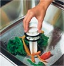
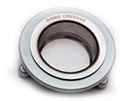

Топовая модель 910
в линейке BoneCrusher
в линейке BoneCrusher
Бытовой измельчитель пищевых отходов
Не имеющая аналогов модель BoneCrusher 910 не боится любых испытаний. Готова перерабатывать пищевые отходы в любом количестве. Справляется с задачей, как в квартире, так и в загородном доме, даже на банкетных приемах. Верхняя модель в линейке бытовых измельчителей A.M.I. BONECRUSHER по праву считается самой мощной и лучшей из представленных на мировом рынке измельчителей пищевых отходов.
| Мощность (л.с) | 3/4 HP |
| Напряжение | 220-240V |
| Амперы | 3.25 |
| Частота | 50-60 Герц |
| Скорость вращения диска | 2700 об/мин |
| Потребляемая мощность(макс) | 520 Вт./час |
| Тип мотора | Магнитный мотор |
| Защита от перегрузок | Автоматическая |
| Способ переработки | Проточный |
| Дробильное кольцо | Нержавеющая сталь |
| Дробильные кулачки | Нержавеющая сталь (литые) |
| Дробильный диск | Нержавеющая сталь |
| Камера дробления | Поликарбонат 940 |
| Сливной фланец | Полиестр |
| Сливная крышка | Полиестр |
| Звукоизоляция | Полная |
|
Технология BioShield
Технология
BIO SHIELD Технология BIO SHIELD запатентованная компанией A.M.I «Bone Crusher» используется при производстве измельчителей «Bone Crusher», препятствует распространению болезнетворных бактерий и микробов, а так же как следствие запахов. |
Есть |
| Технология TorqueMaster
Технология
TorqueMaster Технология Torque_Master была применена в Измельчителях Bone Сrusher нового поколения, эта технология включает в себя не мало важный процесс для обеспечения еще более лучшей и комфортной работы измельчителя. |
Есть |
| Крышка толкатель Мr. Scrappy

Крышка толкатель
Мr. Scrappy В комплекте бытовых моделей есть Мr. Scrappy-это многофункциональный инструмент, который используется и как ручной скребок, для удаления пищи с посуды и как проталкиватель, для продвижения отходов в измельчитель (диспоузер). Так же он выполняет функцию сливной пробки для закрытия отверстия мойки. |
Есть |
| Технология Three-boltedsystem

Технология
Three-boltedsystem «Three-boltedsystem» — это технология крепления прибора к раковине, при помощи трех винтов и замком QuickLock. |
Есть |
| Технология SilverGuard
Технология
SilverGuard Технология Silver Guard позволяет предотвратить попадание железных предметов (столовые приборы) имеющие магнитные свойства в камеру дробления, данное оборудование помогает защитить ваши столовые приборы и сохранить им более долгий срок службы, а так же избавить вас от ситуации связанной с блокировкой прибора. |
Есть |
| Кнопка пневматического включения | Есть |
| Вес | 6,86 кг |
| Гарантия | 6 лет |
Внешний вид диспоузера сам по себе не имеет большого значения, так как прибор в большинстве случаев полностью скрыт от глаз внутри кухонного шкафа. И в то же время его дизайн очень важен с точки зрения рабочих характеристик измельчителя и комфортности его использования. Так, появившиеся в новой BC 910 ребра жесткости позволили дополнительно снизить вибрацию изделия во время работы и обеспечили возможность уменьшения габаритов его корпуса в целом.
При выпуске нового Bone Crusher 910, за счет изменения конфигурации корпуса, инженерам удалось обеспечить пользователям ещё несколько миллиметров свободного пространства под мойкой, сохранив неизменными мощность и количество оборотов двигателя. BC 910 на 35 мм короче, на 18 мм уже, чем BC 900, расстояние до сливного фланца в нем уменьшилось на 17 мм.
По ряду причин инженеры решили вернуться к традиционному варианту крепления диспоузера к горловине мойки с тремя винтами и замком QuickLock. В первую очередь это сделано с целью повышения удобства установки изделий Bone Crusher вместо измельчителей других производителей, использующих унифицированные крепления. Теперь в этом случае нет необходимости производить полный монтаж – достаточно лишь соединить корпус диcпоузера с уже установленным на горловине мойки старым креплением при помощи фиксатора QuickLock . Это также позволит быстро и легко заменить при необходимости одну модель Бонкрашер из новой линейки на другую. Ещё одним преимуществом стандартного крепления, выполненного из нержавеющей стали, является его более высокая прочность и износостойкость, по сравнению с пластиковым.